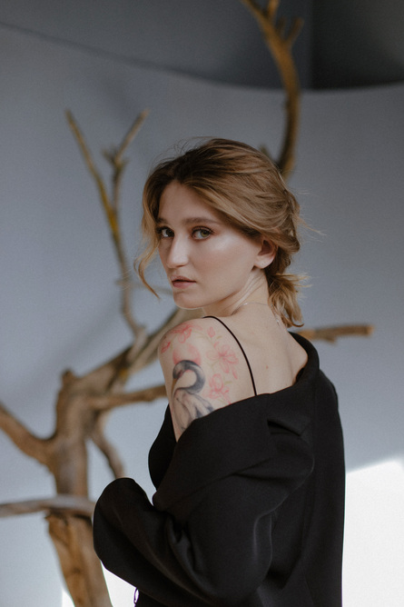

anhen_tattoo
Обо мне
Меня зовут Анна и я тату-мастер.
Я делаю воздушные женственные тату в стиле графика. Также я работаю с цветом и создаю акварельные татуировки. Основной тематикой моих работ являются орнаменты, флора и фауна. Мне нравится микрореалистичные изображения.
Я рисую с детства, поэтому я всегда знала, что тем или иным образом я стану художником. За моими плечами учёба на архитектурном факультете, где я освоила основы композиции, живописи, графики. Работа в течение 2,5 лет в мастерской художником-портретистом, а затем около 3,5 лет мастером перманентного макияжа. В сферу татуировки я пришла с сентября 2020 года. Я самоучка. Для себя я поняла, что это именно та сфера, которая приносит мне полную творческую реализацию
Мне очень приятна мысль, что мои рисунки будут украшать ваше тело, ассоциироваться с чем-то важным для вас, приносить положительные эмоции и ощущение собственной неповторимости.
Важные вопросы/ответы о работе
Здесь я собрала самые нужные пункты о татуировке, записи на сеанс и общие рекомендации
Запись и стоимость
Итак, вам понравились мои работы и вы решили сделать у меня татуировку.
Чтобы записаться на сеанс, напишите мне в личные сообщения и подробно расскажите идею вашей татуировки, примерный размер и место расположения. Приложите несколько фотографий с примерами работ, которые вам нравятся.
Стоимость работы рассчитывается индивидуально и зависит от размера и детальности работы.
Минимальная стоимость татуировки - 3000р. (маленький рисунок или надпись).
Бронирование даты и разработка эскиза осуществляется только после предоплаты.
Из чего складывается стоимость татуировки:
- Разработка индивидуального эскиза
- Консультация
- Одноразовые материалы: модули, бумажные полотенца, краска, ёмкость под пигмент,перчатки, трансферная бумага, простыни, заживляющие плёнка, барьерное защита и т.д.
- Вазелин, антибактериальное мыло, трансферный гель, дезинфицирующие растворы и антисептики
- Аренда помещения
- Время и опыт мастера.
Разработка эскиза
Эскиз я разрабатываю индивидуально по вашему описанию. Также, я работаю по вашим идеям, если они схожи со стилистикой моих работ. Вы можете выбрать и забронировать понравившийся свободный эскиз из профиля.
Индивидуальный эскиз я присылаю за 1-2 дня до сеанса на согласование. Если необходимо мы его корректируем (но не рисуем новый).
Также, чтобы обсудить эскиз вы можете подойти на бесплатную консультацию, на которой мы подробно обговорим все детали.
Отмена и перенос записи
Перенос сеанса возможен за неделю до назначенной даты.
Переношу запись я только один раз не позже чем на месяц.
Повторный перенос по новой предоплате. Предоплата не возвращается.
При форсмажорных обстоятельствах и плохом самочувствии мы обсуждаем перенос записи отдельно.
Подготовка к сеансу
Перед сеансом необходимо соблюсти некоторые рекомендации для качественного итогового результата.
Запланируйте сеанс заранее так, чтобы ваш день был свободен и вы никуда не спешили.
- Выспитесь.
- Хорошо поешьте.
- Не употребляйте алкоголь, кофе, препараты разжижающие кровь за сутки до сеанса.
- Примите душ, проскрабируйте кожу и удалить волоски с будущего места нанесения татуировки, увлажните кожу кремом.
- Наденьте свободную одежду нейтральных оттенков.
- Не желателен загар на коже.
Заживление татуировки
Чтобы татуировка зажила качественно, необходимо придерживаться некоторых ограничений и соблюдать рекомендации, которые даёт мастер... Итоговый результат на 50% зависит от вашего ухода.
1-2 дня после сеанса не рекомендуется употреблять алкоголь, так как он способствует разжижению крови.
Не занимайтесь спортом в течение 7 – 10 дней.
Не распаривайте кожу в течение двух трёх недель.
Нельзя чесать татуировку, пока она полностью не отшелушится. Нельзя загорать около трёх недель. Полностью кожа заживает течение месяца.
Противопоказания
Если вы имеете хронические заболевания, перед татуировкой необходимо проконсультироваться со своим лечащим врачом.
К противопоказанием относятся:
- Тяжелые аутоиммунные заболевания (СПИД, ВИЧ, гепатит и т.д.)
- Инсулинозависимая форма сахарного диабета
- Психические расстройства, эпилепсия
- Кожные заболевания в стадии обострения
- Онкология и острые воспалительные заболевания
- Плохая свертываемость крови
- Склонность к аллергии
- Склонность к образованию келлоидных рубцов
Не рекомендуется делать татуировки в период лактации и беременности, при приеме антибиотиков, при простудных заболеваниях и повышенной температуре. Менструация может снизить болевой порог.
Уход за татуировкой
После сеанса я заклеиваю татуировку заживляющей плёнкой. Её необходимо носить 4-5 дней. После чего её нужно аккуратно медленно стянуть параллельно коже. Далее нужно промыть кожу тёплой водой с мылом. Затем в течение ещё пяти дней нужно увлажнять кожу кремом. Снаружи кожа заживает примерно 10 – 14 дней.
В летний период татуировку на открытых частях тела обязательно необходимо мазать солнцезащитным кремом с высоким уровнем SPF.
Группа поддержки
Я буду рада, если на сеанс вы придёте осознанно и в одиночестве.
Татуировка — это очень личный творческий процесс. Это обмен энергии между вами и мастером.
Мне необходимо общаться с вами наедине и понимать, чего хотите конкретно вы, а не ваши друзья или родственники. Мне будет комфортнее работать, если нас никто не будет отвлекать и сбивать с толку.
Коррекция
Кожа - это наш защитный орган, и как только мы травмируем кожу иглой и вносим такое инородное тело как пигмент, иммунная система сразу начинает его выталкивать. Это сложный процесс, поэтому в ходе заживления какая-то часть пигмента может отторгнуться организмом, особенно это заметно на тонких линиях. Также цвет становится чуть бледнее. Плюс ко всему тату соприкасается с одеждой, что вызывает трение.
Это абсолютно нормально. Именно для того, чтобы поправить все недочеты, через месяц мы делаем коррекцию татуировки, чтобы всё выглядело идеально.
На приживаемость пигмента также влияет правильность ухода, поэтому нужно строго соблюдать все рекомендации. Чем прилежнее вы будете ухаживать за тату, тем лучше она заживёт.
Обязательна ли коррекция?
Если через месяц вы смотрите на свою татуировку, и понимаете, что всё хорошо, вы не хотите сделать ее чуть ярче и линии прижились четко, то коррекция не нужна.
Или если вы сомневаетесь, можете отправить фото мне и мы решим вместе.
Перекрытие шрамов и чужих татуировок
Перекрытие шрамов можно делать только после того, как шрам полностью зажил и побелел (не раньше 1 года после травмы).
Перекрытие некачественных татуировок обговаривается индивидуально и возможно в том случае, если татуировка достаточно бледная и небольшая. Чтобы уточнить возможность перекрытия, отправьте фотографию вашей татуировки в хорошем качестве при хорошем освещении и пример того, чем бы вы хотели ее перекрыть.
Стерильность
В работе используются одноразовые инструменты, перчатки, барьерная защита. Одноразовые иглы вскрываются при вас. Держак машинки проходит стерилизацию в сухожаре.
Поверхности обрабатываются дезинфицирующими растворами.
Как выбрать эскиз для татуировки?
Вы собрались сделать тату, но не знаете, что именно хотите изобразить. Прислушайтесь к себе и задайте себе несколько вопросов.
Эта татуировка должна быть со смыслом для вас или просто украшать ваше тело?
Не всегда обязательно придумывать скрытое значение. Бывает так, что увидели картинку и влюбились. А
если хочется сделать что-то символическое, то нужно понять, что для вас важно и с каким рисунком
можно это ассоциировать.
Где вы хотите её сделать?
Расположение влияет на эскиз. Чтобы татуировка красиво смотрелась на теле, нужно чтобы она
анатомически правильно располагалась и подчеркивала изгибы и линии.
В каком стиле вы хотите её сделать?
Вы должны определиться со стилем и найти мастера, у которого много подобных работ. Идти к мастеру,
который работает в других стилях нецелесообразно.
Если совсем ничего не приходит в голову, не делайте татуировку только ради того чтобы сделать. Есть риск пожалеть о своем решении. Татуировка это в первую очередь ответственность перед самим собой.
Можно понаблюдать за мастерами, которые вам нравятся и выбрать один из свободных эскизов. Мастера с большой радостью делают такие работы, потому что в них можно выразить свой творческий потенциал.
И помните, мастера лишь воплощают рисунок, идея татуировки изначально должна быть вашей. Тату-мастер - это проводник.